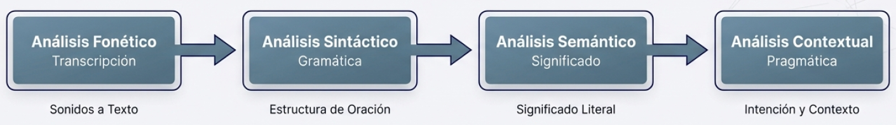

2. Procesamiento del lenguaje natural y generación de texto
El Procesamiento del Lenguaje Natural (PLN) es el campo de conocimiento de la Inteligencia Artificial que
investiga la manera de que las máquinas se comuniquen con las personas mediante el uso de lenguas naturales
(como el español, inglés, francés, etc.). Su objetivo es lograr una interacción sencilla y natural con los
seres humanos, en igualdad de condiciones que con un interlocutor también humano.
Tratar computacionalmente una lengua implica un proceso de modelización matemática. Los ordenadores solo
entienden código binario y dígitos. Los lingüistas computacionales se encargan de "preparar" el modelo
lingüístico para que los ingenieros informáticos lo implementen en un código eficiente y funcional. Algunos
de los componentes del procesamiento del lenguaje natural son:

Análisis morfológico o léxico: Consiste en el análisis interno de las palabras para
extraer raíces, características gramaticales y unidades léxicas compuestas.
Análisis sintáctico: Consiste en analizar la estructura de las oraciones de acuerdo con
las reglas gramaticales empleadas.
Análisis semántico: Proporciona la interpretación del significado de las oraciones, una
vez eliminadas las ambigüedades morfosintácticas.
Análisis pragmático: Incorpora el análisis del contexto de uso a la interpretación
final del mensaje.
2.1. Interpretación de textos
En el campo del análisis de lenguaje natural existen aplicaciones basadas en voz y aplicaciones basadas en
texto. Ambas utilizan la misma base tecnológica, y para añadir la funcionalidad oral se utiliza un módulo de
"Voz a Texto" y viceversa. Las aplicaciones de PLN sirven para extraer información valiosa de datos no
estructurados basados en textos. Algunos ejemplos de aplicación son:
Traducción automática de idiomas
Chatbots y asistentes virtuales
Análisis de opinión de los clientes: Se usa el análisis de entidades para identificar y etiquetar campos
en documentos y diferentes canales de comunicación
Comprensión de recibos y facturas
Análisis de documentos y clasificación de contenido general
Análisis de tendencias en redes sociales y medios
Sanidad: Mejora la documentación clínica y la investigación mediante minería de datos
Las técnicas que permiten adaptar los datos no estructurados del lenguaje para utilizarlos con modelos de
machine learning son:
Tokenización: Separar el texto en unidades llamadas tokens (normalmente palabras o
subpalabras).
Bag of words (Bolsa de palabras): Una manera de representar el vocabulario que consiste
en crear una matriz donde cada columna representa un token.
Word2vec: Técnica que aprende leyendo enormes cantidades de textos y memorizando qué
palabras suelen aparecer en contextos similares.
2.2. Generación de textos
La generación de textos comenzó a tener una aplicación comercial clara como herramienta para crear mensajes
publicitarios o contenido de marketing. En los últimos años han surgido modelos mucho más avanzados y
generales como BERT, GPT y BLOOM. Todos ellos utilizan la arquitectura de los Transformers.
GPT (Generative Pre-trained Transformer): Es un modelo de lenguaje autorregresivo que
emplea aprendizaje profundo para producir textos que simulan la redacción humana. Fue creado por OpenAI.
En 2025, estamos en la era de GPT-4 y modelos posteriores, con capacidades muy superiores a GPT-3, que
ya contaba con 175.000 millones de parámetros de aprendizaje. Una de sus características más destacadas
es que también interpreta y genera código de programación en múltiples lenguajes.
BLOOM: El modelo BigScience Large Open-science Open-access Multilingual Language Model
es un desarrollo de inteligencia artificial que comenzó en 2021. Está entrenado para generar texto en un
total de 59 idiomas (incluyendo español, catalán y vasco) y 13 lenguajes de programación. Sus 176.000
millones de parámetros requirieron 117 días de entrenamiento en la supercomputadora francesa Jean Zay.
Este modelo es completamente de código abierto, lo que lo diferencia de otros modelos propietarios.
2.3. Asistentes conversacionales
Existen varios asistentes virtuales y conversacionales que van más allá de simples chatbots, pues están
habilitados para llevar a cabo tareas complejas dentro del sistema que los aloja e incluso interactuar con
otros servicios a través de conexiones web (webhooks).
Google Assistant y Google Home: Google Home es un altavoz inteligente lanzado en 2016
que permite a los usuarios utilizar comandos de voz para interactuar con el asistente personal de
Google. Permite escuchar música, recibir noticias, controlar dispositivos de automatización del hogar y
muchas otras funciones. En 2025, estos dispositivos han evolucionado significativamente en capacidades y
comprensión contextual.
Alexa y Echo: Alexa es el asistente virtual controlado por voz creado por Amazon y
lanzado en 2014 junto a su línea de altavoces inteligentes Echo. Ha evolucionado para ofrecer miles de
"skills" o habilidades que permiten realizar una amplia variedad de tareas.
Otros asistentes virtuales: Apple ha desarrollado Siri, que ha mejorado
considerablemente sus capacidades desde su lanzamiento. Microsoft continúa trabajando en la integración
de inteligencia artificial conversacional en sus productos, habiendo evolucionado más allá de Cortana
hacia soluciones más integradas en sus servicios.